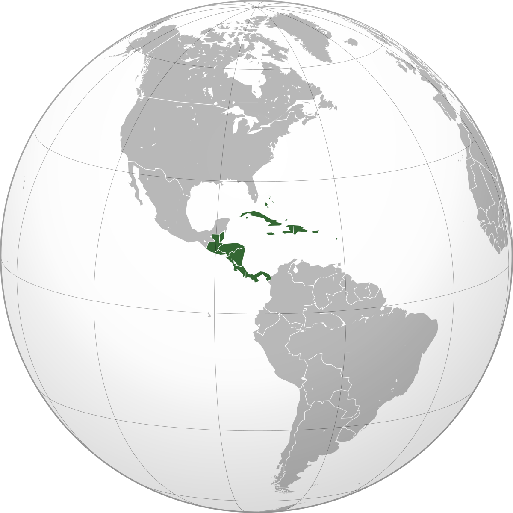
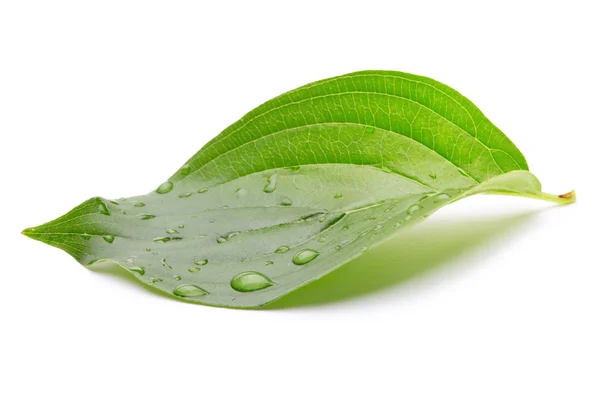
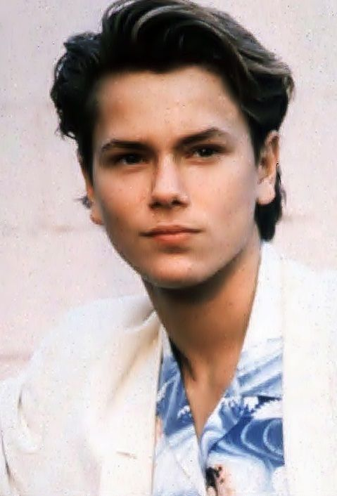

Curiosidades

Ele nasceu em 28 de outubro de 1974 e é de nacionalidade porto-riquenha. É o terceiro de 5 irmãos e filho de 2 artistas que costumavam viajar pela América do Sul. Joaquin viveu durante 3 anos em San Juan, sua terra natal.
1. Joaquin Phoenix nasceu na américa central.
Ele nasceu em 28 de outubro de 1974 e é de nacionalidade porto-riquenha. É o terceiro de 5 irmãos e filho de 2 artistas que costumavam viajar pela América do Sul. Joaquin viveu durante 3 anos em San Juan, sua terra natal.
2. Vegano desde muito cedo.
A família de Joaquin era vegana, então ele adotou esse estilo de vida desde a tenra idade. Atualmente, trabalha com associações que protegem os direitos dos animais e realizou campanhas para aumentar a conscientização sobre os maus-tratos a animais.

Os irmãos de Joaquin têm nomes relacionados à natureza: River (rio), Liberty (liberdade), Rain (chuva) e Summer (verão). Por isso, aos 6 anos, decidiu mudar seu nome para Leaf (folha) até os 16 anos, quando decidiu voltar a usar seu nome verdadeiro.
3. Já se chamou Leaf.
Os irmãos de Joaquin têm nomes relacionados à natureza: River (rio), Liberty (liberdade), Rain (chuva) e Summer (verão). Por isso, aos 6 anos, decidiu mudar seu nome para Leaf (folha) até os 16 anos, quando decidiu voltar a usar seu nome verdadeiro.
4. Já foi preso.
Sim, isso mesmo que você leu! Joaquin Phoenix foi preso há 2 anos, junto com o ator Martin Sheen, em um protesto contra mudanças climáticas organizado pela atriz Jane Fonda em 2020. Os atores não ficaram presos por muito tempo mas, esse evento mostra que Phoenix tem um papel bem ativo quando o assunto é ativismo.

O sobrenome não é apenas uma coincidência. Joaquin é realmente irmão do ator River Phoenix, que foi uma estrela nas décadas de 1980 e 1990. O promissor ator e o protagonista de Coringa eram bem próximos, sendo River uma forte inspiração para o irmão mais novo. Infelizmente a vida dos dois acabou sofrendo um grande imprevisto. Em 31 de outubro de 1993, a dupla estava na boate The Viper Room (que pertencia a Johnny Depp) quando River começou a passar mal. Joaquin logo correu para chamar a emergência, porém não deu tempo, seu irmão acabou morrendo após um séria overdose.
5. River, seu irmão.
O sobrenome não é apenas uma coincidência. Joaquin é realmente irmão do ator River Phoenix, que foi uma estrela nas décadas de 1980 e 1990. O promissor ator e o protagonista de Coringa eram bem próximos, sendo River uma forte inspiração para o irmão mais novo. Infelizmente a vida dos dois acabou sofrendo um grande imprevisto. Em 31 de outubro de 1993, a dupla estava na boate The Viper Room (que pertencia a Johnny Depp) quando River começou a passar mal. Joaquin logo correu para chamar a emergência, porém não deu tempo, seu irmão acabou morrendo após um séria overdose.